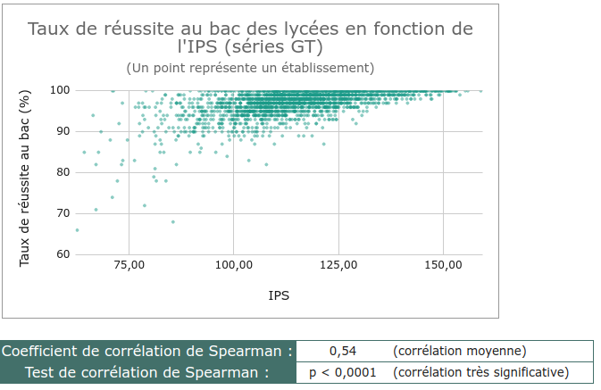
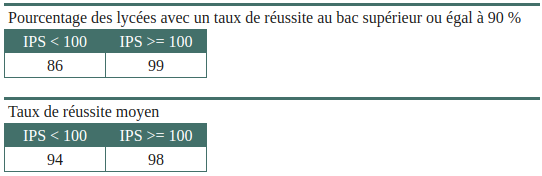

Indice de Position Sociale (IPS) des lycées français
Problématique
Début 2023, le ministère de l'éducation nationale a dévoilé l'Indice de Position Sociale des lycées français. Cet indice permet d'attribuer une valeur quantitative à l'origine sociale des élèves. Plus l'indice est grand, plus l'élève est issu d'une catégorie sociale considérée comme favorable à sa réussite scolaire. Cet indicateur est calculé à partir de plusieurs critères : diplômes des parents, conditions matérielles dans le foyer (nombre de pièces du logement, chambre seul, ordinateur,...), revenus des parents,... L'IPS attribué à un lycée est une moyenne des IPS des élèves de l'établissement.
Le but de ce petit projet était d'utiliser les fonctionnalités d'un tableur pour explorer le jeu de données et en tirer des informations à partir de calculs et de représentations graphiques. Je tiens à préciser que je ne fais ici que des constats et qu'aucun jugement sur les résultats ne sera prononcé.
Le fichier contenant le travail effectué est disponible ici au format xlsx.
Présentation du jeu de données
Les données représentent la situation des lycées lors de l'année scolaire 2021-2022. Le jeu de données est constitué de 13 colonnes dont voici une description pour les plus importantes :
- academie : academie dans laquelle se situe le lycée
- uai : code UAI de l'établissement (permet d'identifier l'établissement de manière unique)
- nom_de_l_établissement
- nom_de_la_commune
- secteur : indique si l'établissement est public ou privé sous contrat
- type_de_lycee : indique si l'établissement est un LEGT (Lycée d'Enseignement Général et Technologique), un LP (Lycée Professionnel) ou un LPO (Lycée Polyvalent qui regroupe une section GT et une section professionnelle)
- ips_voie_gt : IPS de l'établissement si c'est un LEGT, IPS de la seule section GT si c'est un LPO, vide si c'est un LP
- ips_voie_pro : IPS de l'établissement si c'est un LP, IPS de la seule section Pro si c'est un LPO, vide si c'est un LEGT
- ips_ensemble_gt_pro : ips de l'ensemble de l'établissement
Premiers résumés statistiques
Des premiers paramètres statistiques sont faciles à obtenir à l'aide des fonctions AVERAGE, STDEV, MEDIAN, ou encore MIN et MAX. On obtient les résultats suivants :
- l'IPS moyen est de 103,91 avec un écart-type de 18,9 ;
- l'IPS médian est de 103,8 ;
- l'IPS le plus petit est de 49,5 et le plus grand est de 159.
On remarque que la moyenne et la médiane sont proches, ce qui amène à penser à une certaine symétrie de la répartition des établissements selon leur IPS, ce qui est confirmé en traçant un histogramme à l'aide du tableur.
Comparaison des établissements suivant leur type
Les paramètres précédents n'ont qu'un intérêt limité pour comprendre le jeu de données. On peut pousser l'analyse plus loin en comparant les établissements en fonction de leur type. On peut calculer les mêmes paramètres mais cette fois pour chaque type d'établissement (LGT, LP, LPO). J'ai utilisé pour cela une pivot table (tableau croisé dynamique pour la version française des tableurs).
On s'aperçoit alors que les LGT accueillent en moyenne des élèves plus favorisés socialement que les LP. Il existe néanmoins des LGT à IPS faible et des LP à IPS élevé. Cela n'est pas présenté dans le tableau ci-dessus mais la position intermédiaire des LPO est due au fait qu'ils comportent à la fois une section GT et une section Pro. Leur section GT accueille en moyenne des élèves à IPS plus élevés que ceux de leur section Pro (108,11 contre 88,29).
Pour confirmer cet écart entre les LGT et les LP, regardons la répartition des lycées en fonction de leur type (dans le diagramme ci-dessous, les LPO sont inclus mais leur section GT a été incluse aux données des LGT et leur section Pro aux données des LP). Le diagramme montre clairement la différence des populations des LGT et des LP.
Remarque technique
Pour réaliser cet histogramme, il faut utiliser deux séries de données : une pour chaque section. Cela est facilité ici par le fait qu'il existe déjà une colonne spécifique regroupant l'IPS des sections GT et une autre pour les sections Pro. Si cela n'avait pas été le cas, il aurait été prossible de faire un tri des données selon le type de l'établissement.
J'ai également calculé la proportion des établissements de chaque type dont l'IPS est supérieur ou égal à la moyenne de l'ensemble des établissements :
On s'aperçoit que 84,25 % des LGT ont un IPS supérieur ou égal à l'IPS moyen, ce qui n'est le cas que pour 6,63 % des LP.
Remarque technique
Pour réaliser ce calcul, il faut compter le nombre de lycées qui sont des LGT et qui ont un IPS supérieur à la moyenne afin de diviser le résultat par le nombre total de LGT. Cela se fait facilement à l'aide de la fonction COUNTIFs (NB.SI.ENS en français).
On peut faire le même type de comparaison sur les 100 établissements aux IPS les plus élevés. On trouve alors que ce sont tous des LGT !
Concernant les 100 établissements aux IPS les moins élevés, on trouve 75 LP, 21 LPO et seulement 4 LGT.
Comparaison des établissements suivant leur secteur
Il est aussi intéressant de comparer les secteurs publics et privés. Là-aussi, à l'aide d'une pivot table, on obtient les résultats suivants :
On s'aperçoit qu'en moyenne les lycées privés possèdent des élèves plus favorisés socialement. Mais on remarquera néanmoins que l'IPS minimal est celui d'un lycée privé et que l'IPS maximal est celui d'un lycée public. Cependant, ces derniers font figures d'exception. En effet, lorsque l'on regarde les 100 établissements les plus favorisés, 80 sont privés et seulement 20 sont publics. Du côté des 100 établissements aux élèves les moins favorisés, 84 sont publics et seulement 16 sont privés.
De même, 65,8 % des lycées privés ont un IPS supérieur à la moyenne alors que ce n'est le cas que de 41,5 % des établissements publics.
Voici la répartition des lycées suivant leur IPS en fonction de leur secteur :

Pour terminer cette comparaison, on peut voir sur le diagramme ci-dessous que quel que soit le type d'établissement, le secteur privé accueille en moyenne des élèves plus favorisés que le secteur public.
Remarque technique
Pour réaliser les calculs et les diagrammes de cette partie, j'ai utilisé les mêmes méthodes que pour la partie précédente. La seule chose qui change est le fait de répartir les données suivant le secteur plutôt que le type.
Correlation entre IPS et réussite au bac ?
On peut se poser la question : y-a-t-il une meilleure réussite chez les élèves dont l'IPS est le plus grand ? Regardons s'il existe une corrélation entre le taux de réussite au bac des lycées et leur IPS.
Pour cela, j'ai utilisé un deuxième jeu de données disponible sur le site data.education.gouv.fr. On trouve dans ce jeu de données le nom et le code UAI des lycées de type GT ainsi qu'un certain nombre de variables dont celle qui nous intéresse : le taux de réussite au baccalauréat en 2021. On peut alors tracer un nuage de points représentant le taux de réussite au bac en fonction de l'IPS des lycées (la droite rouge est la droite de régression linéaire).
Remarque technique
Pour juxtaposer l'IPS et le taux de réussite au bac d'un même établissement, il faut mettre en relation les deux jeux de données (faire une sorte de jointure de tables). On peut par exemple partir du jeu de données sur le taux de réussite au bac et aller chercher pour chaque établissement l'IPS correspondant. J'ai utilisé pour cela la fonction XLOOKUP qui m'a permis de faire une recherche de l'IPS d'un établissement à partir de son code UAI.

On peut remarquer que dans l'ensemble le taux de réussite est meilleur lorsque l'IPS devient grand, même s'il existe de très bons taux de réussite dans des lycées avec un IPS moyen voire faible. Cependant, le coefficient de corrélation linéaire entre les deux variables n'est que de 0,55. La corrélation est donc assez moyenne mais pas inexistante (corrélation linéaire). On peut d'ailleurs remarquer que le taux de réussite moyen des établissements dont l'IPS est inférieur à 100 est de 94 % contre 98 % pour ceux dont l'IPS est supérieur ou égal à 100. De même, 86 % des lycées à IPS inférieur à 100 ont un taux de réussite supérieur ou égal à 90 % alors qu'ils représentent 99 % des lycées à IPS supérieur ou égal à 100.

On peut tout de même émettre des réserves sur cette analyse :
- En 2021, la crise du covid-19 était encore bien présente. Beaucoup de lycées ont utilisé un fonctionnement hybride présentiel-distanciel pendant une bonne partie de l'année scolaire. Pour tenir compte des difficultés d'apprentissage des élèves, les épreuves du bac ont été aménagées. Les taux de réussite sont donc à prendre avec du recul.
- Depuis la réforme du lycée initiée en 2019, le contrôle continu a pris une grande place dans le résultats du bac (40 % de la note finale). On peut se demander si tous les établissements jouent le jeu ou si certains ont tendance à gonfler les notes pour obtenir de meilleurs résultats au bac. Est-on noté de la même manière dans tous les lycées de France ?